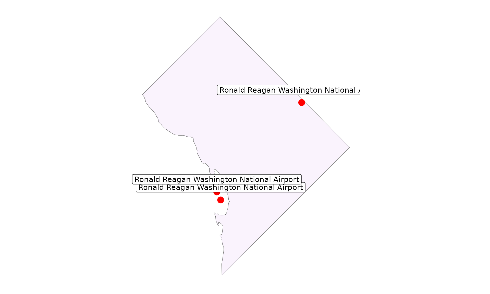
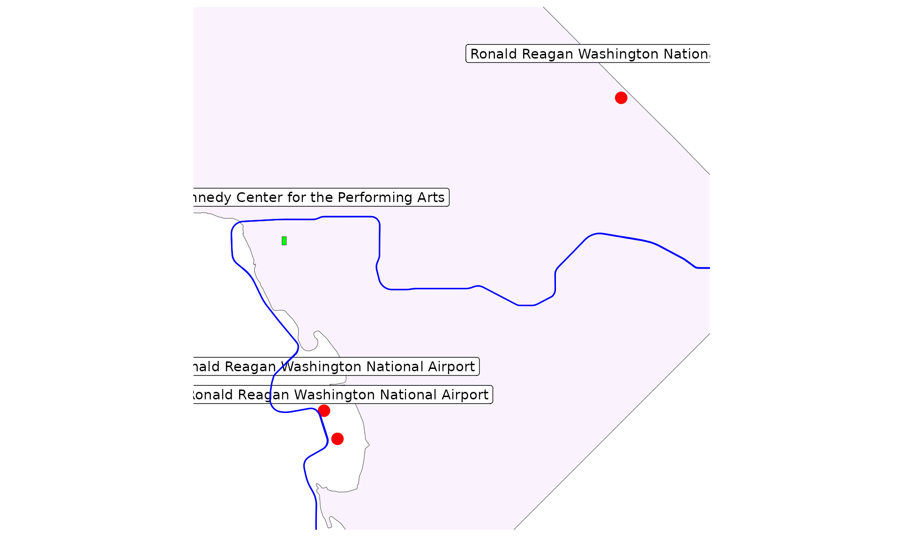

Raising the Curtain: Getting Started with overtureR
Source:vignettes/articles/getting_started.Rmd
getting_started.Rmd
# install if needed:
install.packages("overtureR")This vignette demonstrates how to use overtureR to access and visualize Overture Maps data, focusing on a practical example in Washington, DC: finding the theater.
Overture Maps is an open-source mapping initiative aimed at developers who build map services or use geospatial data. It provides a collaborative, globally-referenced, and quality-assured dataset with a structured schema. This makes it an excellent resource for creating reliable and interoperable map products. Using overtureR, we can easily tap into this rich dataset. In this guide, we’ll walk through the process of:
- Fetching the boundary of Washington, DC
- Locating Ronald Reagan National Airport
- Finding the Kennedy Center theater
- Getting to the Kennedy Center with public transit
open_curtain() function is our primary tool for
accessing Overture Maps data. We’ll start by using
open_curtain() to retrieve the DC boundary and pinpoint the
airport:
# Washington, DC boundary
dc <- open_curtain("division_area") |>
filter(subtype == "region", region == "US-DC") |>
collect()
# adding a bounding box makes the query faster:
dc_catchment <- st_geometry(dc) |>
# 10 miles from DC
st_buffer(10 * 1609.34) |>
st_bbox()
reagan_airport <- open_curtain("place", spatial_filter = dc_catchment) |>
filter(
names$primary == "Ronald Reagan Washington National Airport",
categories$primary == "airport"
) |>
collect()
#> OGR: Unsupported geometry type
print(reagan_airport)
#> Simple feature collection with 1 feature and 15 fields
#> Geometry type: POINT
#> Dimension: XY
#> Bounding box: xmin: -77.04384 ymin: 38.84906 xmax: -77.04384 ymax: 38.84906
#> Geodetic CRS: WGS 84
#> # A tibble: 1 × 16
#> id geometry bbox$xmin version sources names$primary
#> * <chr> <POINT [°]> <dbl> <int> <list> <chr>
#> 1 08f2aa87b1c… (-77.04384 38.84906) -77.0 0 <df [1 × 5]> Ronald Reaga…
#> # ℹ 15 more variables: bbox$xmax <dbl>, $ymin <dbl>, $ymax <dbl>,
#> # names$common <list>, $rules <list>, categories <df[,2]>, confidence <dbl>,
#> # websites <list>, socials <list>, emails <list>, phones <list>,
#> # brand <df[,2]>, addresses <list>, theme <chr>, type <chr>By default, open_curtain would search through every
“place” (aka point of interest) in the world - an enormous dataset.
Obviously, that’s too much to load into most computers’ memory, so
open_curtain does this lazily. Only after calling
collect_sf does it load data onto your computer. So we
filter the data first, spatially and by name, like so:
- fetch the boundary of Washington, DC from the “division_area” dataset;
- filter for the specific region we wanted;
- create a spatial buffer around DC to define our area of interest for subsequent queries; and
- locate Ronald Reagan National Airport using the “place” dataset, filtering by name and category.
Afterwards, collect_sf brings the only the data need
into memory. For more on lazy programming, see the dbplyr documentation.
Now that we’ve set the stage with our starting point, let’s spotlight our destination. In the next code block, we’ll locate the Kennedy Center:
reagan_plot <- ggplot() +
geom_sf(data = dc, fill = "purple", alpha = 0.05) +
geom_sf(data = reagan_airport, color = "red", size = 4) +
geom_sf_label(
data = reagan_airport, nudge_y = 0.01, aes(label = names$primary)
) +
theme_minimal() +
theme(
axis.title = element_blank(),
axis.text = element_blank(),
axis.ticks = element_blank(),
panel.grid = element_blank()
)
reagan_plot
In this code, we’ve queried the “building” dataset within our defined DC area. We used a text filter to find buildings with “The Kennedy Center” in their name. This demonstrates overtureR’s ability to perform text-based searches within the Overture Maps dataset.
To get to the theater, we’ll need to know our transit options. The following code showcases overtureR’s capacity to handle more complex spatial and attribute queries:
kennedy_center <- open_curtain("building", st_bbox(dc)) |>
filter(grepl("Kennedy Center", names$primary)) |>
collect()
kennedy_plot <- reagan_plot +
geom_sf(data = kennedy_center, fill = "green") +
geom_sf_label(data = kennedy_center, nudge_y = 0.01, aes(label = names$primary))
kennedy_plotIn the code above, we’ve created a bounding box that encompasses both the airport and the Kennedy Center, plus a one-mile buffer. We then used this to filter the “segment” dataset for rail transit, specifically the Blue Line of the DC Metro.
For the grand finale, we’ll create a map that displays all the elements we’ve gathered:
# filter town to areas that are within 1 mile of our two points
kennedy_reagan_bbox <- bind_rows(kennedy_center, reagan_airport) |>
st_bbox() |>
st_as_sfc() |>
st_buffer(1 * 1609.34) |>
st_bbox()
dc_transit <- open_curtain("segment", kennedy_reagan_bbox) |>
filter(
subtype == "rail",
# filter to the Blue Line of the DC Metro
grepl("Metro", names$primary),
grepl("Blue", names$primary)
) |>
select(id, names, geometry) |>
collect()
print(dc_transit)
#> Simple feature collection with 68 features and 2 fields
#> Geometry type: LINESTRING
#> Dimension: XY
#> Bounding box: xmin: -90.31959 ymin: 28.55565 xmax: 77.32188 ymax: 38.90493
#> Geodetic CRS: WGS 84
#> # A tibble: 68 × 3
#> id names$primary geometry
#> * <chr> <chr> <LINESTRING [°]>
#> 1 087264626affffff043ffc2b3144b3a7 MetroLink Blue Li… (-90.31937 38.59281, -90…
#> 2 08a264626ac9ffff047f7d261e0621c1 MetroLink Blue Li… (-90.31953 38.59449, -90…
#> 3 0882aaab6b9fffff047fce6d3d503cbb Washington Metro … (-77.17012 38.76558, -77…
#> 4 0882aaab6b9fffff047f4f7cfb7d2213 Washington Metro … (-77.16921 38.76605, -77…
#> 5 0882aaab6b9fffff047d4f802d0088b3 Washington Metro … (-77.1722 38.76407, -77.…
#> 6 0892aaab6b87ffff043feba9dc38ea8a Washington Metro … (-77.16921 38.76605, -77…
#> 7 0882aaab6b9fffff043deaefb98cca11 Washington Metro … (-77.16914 38.76595, -77…
#> 8 0882aaab6b9fffff043d5eed1e3cfc79 Washington Metro … (-77.16668 38.76711, -77…
#> 9 0892aaab6b97ffff043d4f37cb3cfa67 Washington Metro … (-77.16662 38.76702, -77…
#> 10 0892aaab6b97ffff043def367e4234e1 Washington Metro … (-77.16668 38.76711, -77…
#> # ℹ 58 more rows
#> # ℹ 2 more variables: names$common <list>, $rules <list>This final step uses ggplot2 to create a map that displays the airport, the Kennedy Center, and the Metro Blue Line connecting them. This visualizes the route from our arrival point to our theatrical destination.
kennedy_plot +
geom_sf(data = dc_transit, color = "blue") +
coord_sf(
xlim = c(kennedy_reagan_bbox[["xmin"]], kennedy_reagan_bbox[["xmax"]]),
ylim = c(kennedy_reagan_bbox[["ymin"]], kennedy_reagan_bbox[["ymax"]]),
)
Perfect, it looks like we can take the blue line straight there. Break a leg!